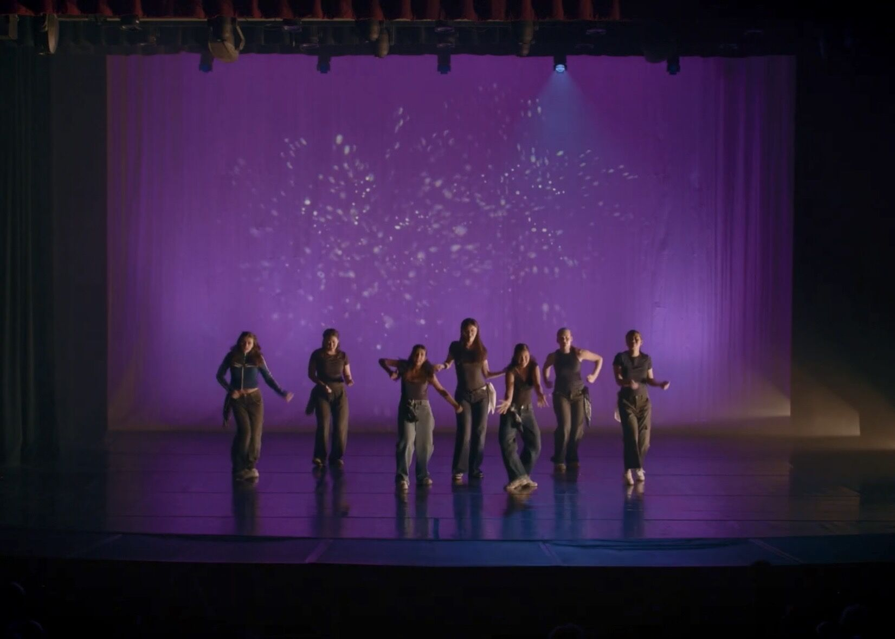

Creative & Athletic
Badminton
I’ve loved playing badminton with my family since I was young, and being able to play with close friends on a school team was a dream come true. I play mixed and girls doubles, and placed second in girls’ doubles in the Montview League in 2025.
Dance
I’ve been dancing since I was two, starting with ballet. At nine, I performed with San Francisco Ballet despite being a year below the program’s minimum age. As I moved between schools, cities, and countries, I explored styles including K-pop, jazz, and hip-hop. Today, I primarily dance hip-hop. Below is a piece I co-choreographed for my school’s dance show.
Piano
I’ve always seen piano as an outlet of expression and relaxation. I’ve played classical piano for 14 years now, and competed in multiple competitions with awards.
Singing/Vocal
I’ve always loved singing, but formally began taking lessons in 2020. Since then, I’ve worked on vocal technique, interpretation, and performance through a mix of contemporary and musical theatre repertoire. I have included one professionally recorded cover I did here.